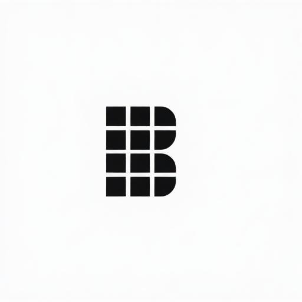

<nav class="fixed top-0 left-0 right-0 z-50 bg-background/95 backdrop-blur-sm border-b border-border shadow-soft">
    <div class="container mx-auto px-4">
        <div class="flex items-center justify-between h-16">
            <!-- Logo -->
            <a href="index.html" class="flex items-center space-x-2">
                
                <span class="font-bold text-2xl text-foreground">bitwork.dk</span>
            </a>

            <!-- Desktop Navigation -->
            <div class="hidden md:flex items-center space-x-1">
                <a href="index.html" class="px-4 py-2 rounded-lg text-sm font-medium transition-colors text-foreground hover:bg-muted">Forside</a>
                <a href="om-os.html" class="px-4 py-2 rounded-lg text-sm font-medium transition-colors text-foreground hover:bg-muted">Om Os</a>
                <a href="ydelser.html" class="px-4 py-2 rounded-lg text-sm font-medium transition-colors text-foreground hover:bg-muted">Ydelser</a>
                <a href="kontakt.html" class="px-4 py-2 rounded-lg text-sm font-medium transition-colors text-foreground hover:bg-muted">Kontakt</a>
                <a href="kontakt.html">
                    <button class="ml-4 bg-gradient-primary hover:opacity-90 transition-opacity btn text-white">Få en gratis konsultation</button>
                </a>
            </div>

            <!-- Mobile Menu Button -->
            <button id="mobile-menu-button" class="md:hidden p-2 text-foreground hover:bg-muted rounded-lg">
                <svg xmlns="http://www.w3.org/2000/svg" width="24" height="24" viewBox="0 0 24 24" fill="none" stroke="currentColor" stroke-width="2" stroke-linecap="round" stroke-linejoin="round" class="lucide lucide-menu"><line x1="4" x2="20" y1="12" y2="12"/><line x1="4" x2="20" y1="6" y2="6"/><line x1="4" x2="20" y1="18" y2="18"/></svg>
            </button>
        </div>

        <!-- Mobile Navigation -->
        <div id="mobile-menu" class="hidden md:hidden py-4 space-y-2 animate-fade-in">
            <a href="index.html" class="block px-4 py-2 rounded-lg text-sm font-medium transition-colors text-foreground hover:bg-muted">Forside</a>
            <a href="om-os.html" class="block px-4 py-2 rounded-lg text-sm font-medium transition-colors text-foreground hover:bg-muted">Om Os</a>
            <a href="ydelser.html" class="block px-4 py-2 rounded-lg text-sm font-medium transition-colors text-foreground hover:bg-muted">Ydelser</a>
            <a href="kontakt.html" class="block px-4 py-2 rounded-lg text-sm font-medium transition-colors text-foreground hover:bg-muted">Kontakt</a>
            <a href="kontakt.html" class="block">
                <button class="w-full bg-gradient-primary hover:opacity-90 transition-opacity btn text-white">Få en gratis konsultation</button>
            </a>
        </div>
    </div>
</nav>

<script>
    const mobileMenuButton = document.getElementById('mobile-menu-button');
    const mobileMenu = document.getElementById('mobile-menu');
    mobileMenuButton.addEventListener('click', () => {
        mobileMenu.classList.toggle('hidden');
    });
</script>